India
India
La ruta de India: 3 regiones, 12 monumentos. Cada monumento se construye en tres fases.
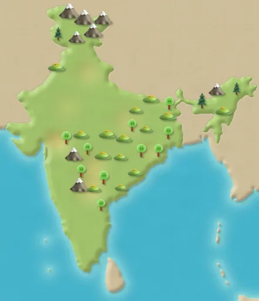
Delhi
Pasos de ruta 1–12
Fuerte Rojo
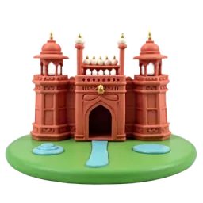
Fase 1 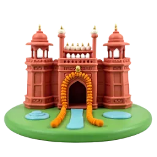
Fase 2 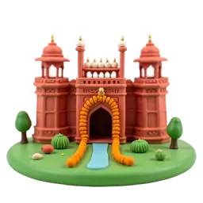
Fase 3 El Fuerte Rojo debe su nombre a sus murallas de arenisca roja. Es Patrimonio de la Humanidad desde 2007. Fuente: Wikipedia
Qutb Minar
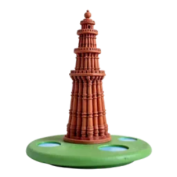
Fase 1 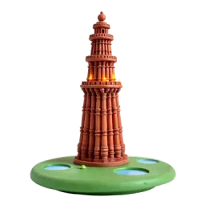
Fase 2 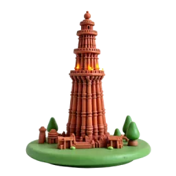
Fase 3 Con 72,5 metros, el Qutb Minar es el minarete de ladrillo más alto del mundo. Fuente: Wikipedia
Tumba de Humayun
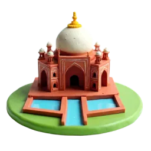
Fase 1 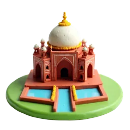
Fase 2 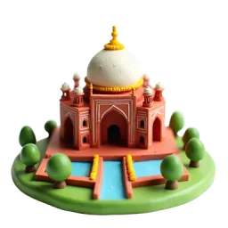
Fase 3 La Tumba de Humayun fue la primera tumba-jardín del subcontinente indio. La UNESCO la incluyó en 1993. Fuente: Wikipedia
Templo del Loto
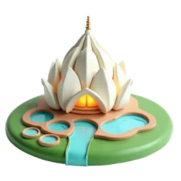
Fase 1 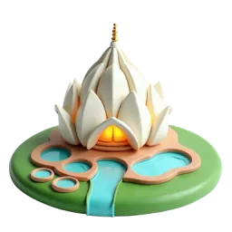
Fase 2 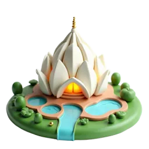
Fase 3 El Templo del Loto tiene 27 pétalos revestidos de mármol, en tres anillos de nueve, como una flor entreabierta. Fuente: Wikipedia
Agra
Pasos de ruta 13–24
Taj Mahal
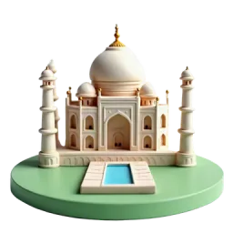
Fase 1 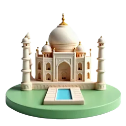
Fase 2 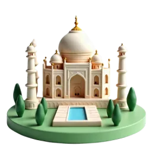
Fase 3 El emperador Shah Jahan encargó el Taj Mahal en 1631 para albergar la tumba de su esposa, Mumtaz Mahal. Fuente: Wikipedia
Fuerte de Agra
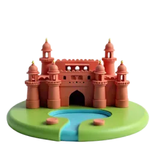
Fase 1 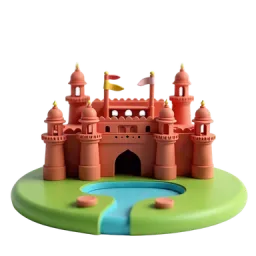
Fase 2 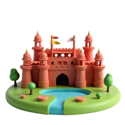
Fase 3 El emperador Akbar reconstruyó el Fuerte de Agra en arenisca roja entre 1565 y 1573. Fuente: Wikipedia
Buland Darwaza de Fatehpur Sikri
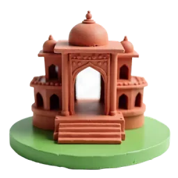
Fase 1 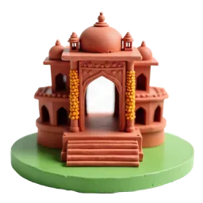
Fase 2 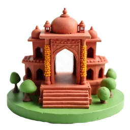
Fase 3 El emperador Akbar inició esta enorme puerta en 1573 para celebrar una victoria. Mide unos 54 metros desde el suelo. Fuente: Wikipedia
Jardín Mehtab Bagh
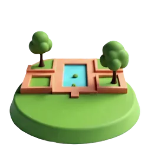
Fase 1 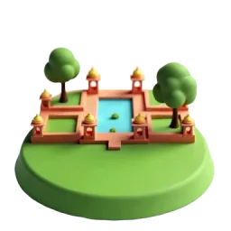
Fase 2 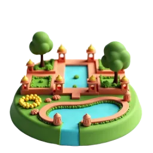
Fase 3 Mehtab Bagh significa ‘Jardín de la Luz de Luna’. Está al otro lado del río, perfectamente alineado con el Taj Mahal. Fuente: Wikipedia
Jaipur
Pasos de ruta 25–36
Hawa Mahal
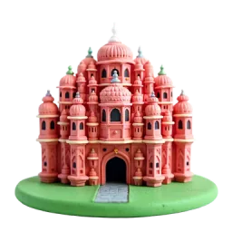
Fase 1 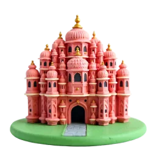
Fase 2 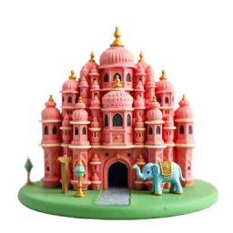
Fase 3 El Hawa Mahal, el ‘Palacio de los Vientos’, tiene 953 ventanitas dispuestas como un panal. Fuente: Wikipedia
Fuerte Amber
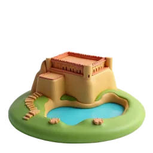
Fase 1 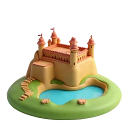
Fase 2 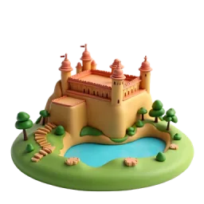
Fase 3 Dentro del Fuerte Amber está el Sheesh Mahal, un palacio de espejos cuyos espejitos brillaban a la luz de las velas. Fuente: Wikipedia
Palacio del agua Jal Mahal
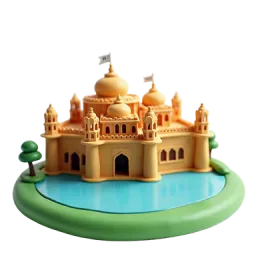
Fase 1 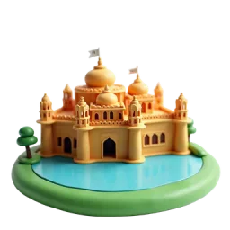
Fase 2 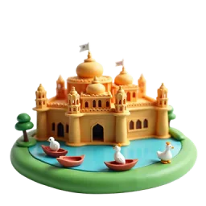
Fase 3 El Jal Mahal tiene cinco pisos, pero cuando el lago Man Sagar está lleno, el piso inferior queda bajo el agua. Fuente: Wikipedia
Observatorio Jantar Mantar
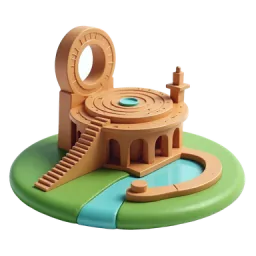
Fase 1 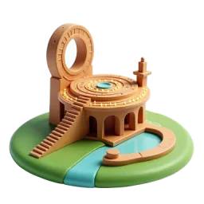
Fase 2 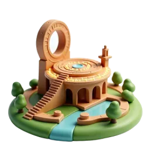
Fase 3 El Jantar Mantar, terminado en 1734, tiene el reloj de sol de piedra más grande del mundo. Fuente: Wikipedia